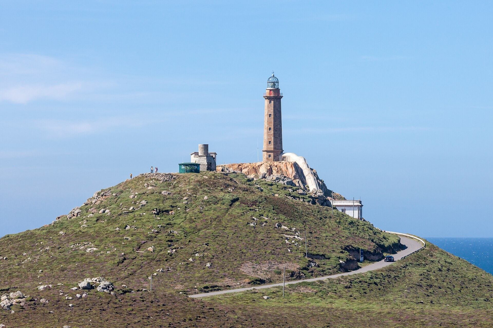
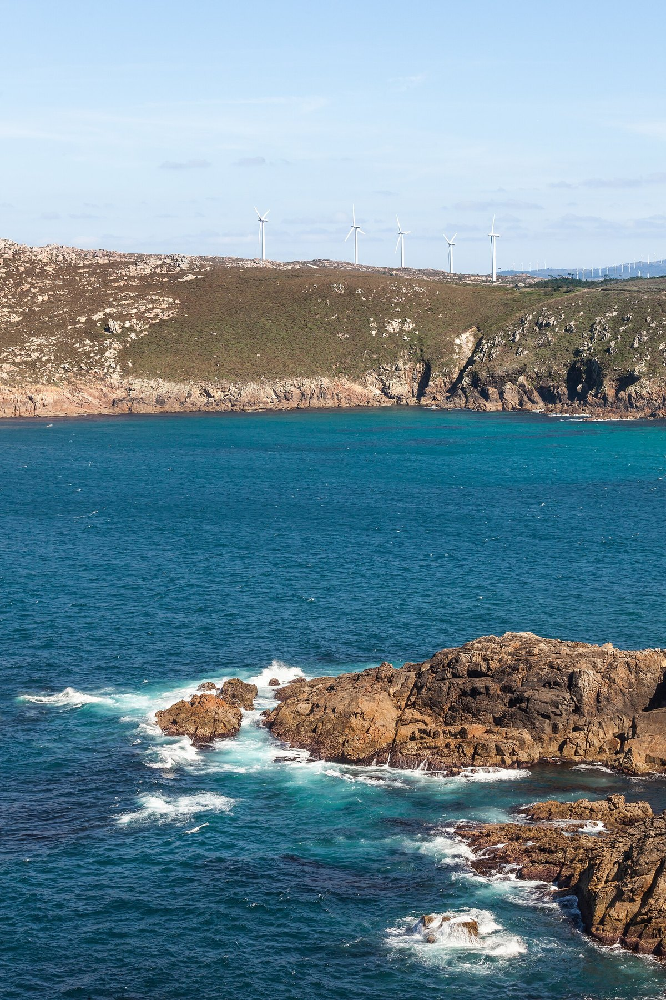
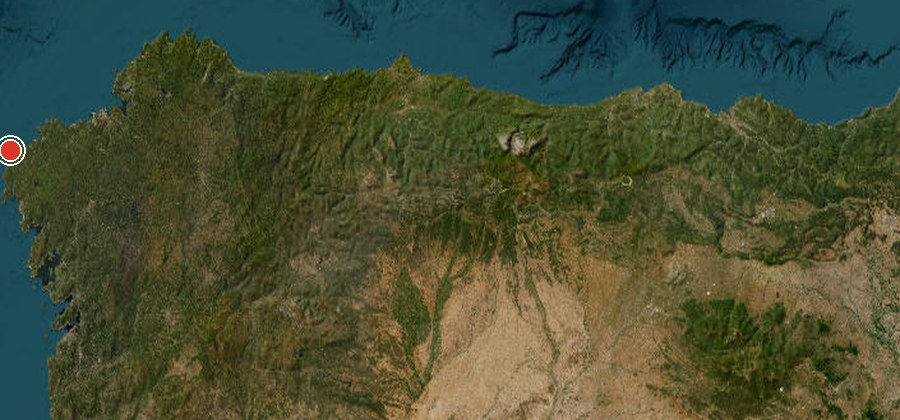

Cabo Vilán + Camariñas


Дикий мыс Costa da Morte: маяк над гранитными скалами, сильный океан и порт Camariñas рядом.
Что делать. Доехать к маяку по обычной дороге, пройти короткий участок у смотровых, затем обед или прогулка в Camariñas.
Ветер и открытые края — ребёнка держать. Грунтовую прибрежную дорогу через Praia do Trece с большим автодомом не планировать.
